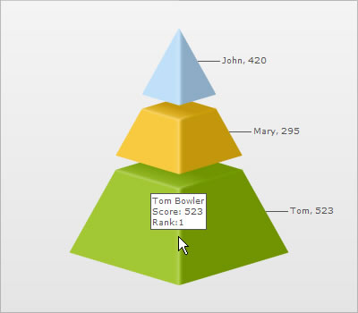

Putting tooltip in multiple lines |
| FusionWidgets v3 allows you to put your tool tips in multiple lines with a little manual tweaking. Consider the XML below: |
| <chart> <set label='John' value='420' tooltext='John Miller{br}Score: 420{br}Rank:2'/> <set label='Mary' value='295' tooltext='Mary Evans{br}Score: 295{br}Rank:3'/> <set label='Tom' value='523' tooltext='Tom Bowler{br}Score: 523{br}Rank:1'/> </chart> |
In the above XML, we're first setting 3 lines tool tip content for each <set>. To separate each line we use the {br} pseudo code, which is equivalent to <BR> HTML tag in FusionCharts for tool-tips When you now see the chart, you'll get the following output: |
|  |